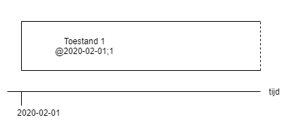
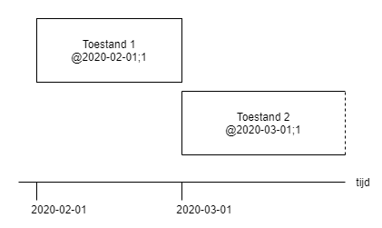
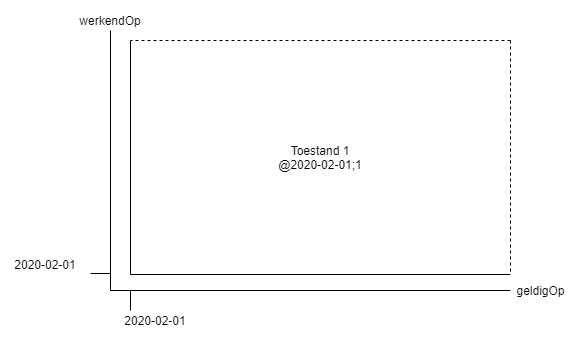
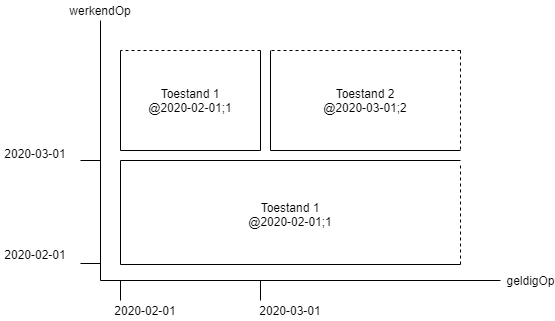
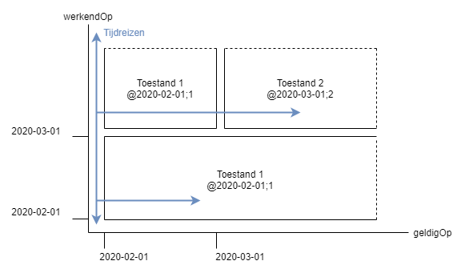

Bi-temporeel model
Om inzichtelijk te maken wat de geldigheid van de Toestanden van een regeling waren in de loop van de tijd, kan gebruik gemaakt worden van het zogenaamde "bi-temporele model". De werking van dit model wordt uitgelegd aan de hand van een voorbeeld.
Stel een nieuwe regeling wordt geldig op 1 februari 2020. De geldigheid van de Toestand van de regeling kan in een eenvoudig diagram tegen de tijd worden getekend:

Op het moment van bekendmaken van de regeling met inwerkingtreding is de geldigheid in principe oneindig. In het diagram is dat afgebeeld middels een gestippeld einde aan "het balkje".
Stel dat op 1 maart 2020 na bekendmaking van een wijzigingsbesluit een gewijzigde regelingversie geldig wordt en in werking treedt. Er ontstaat een nieuwe Toestand @2020-01-03. In het diagram tegen de tijd is deze tweede Toestand van de Regeling een nieuwe blokje met een "open einde". Het eerste blokje van Toestand 1 wordt afgesloten:

Door het ontstaan van Toestand 2 krijgt Toestand 1 twee geldigheidsperiodes:
De eerste periode waarin het balkje een 'open einde' heeft. Deze periode heeft een werking van 2020-02-01 tot 2020-03-01. In deze periode start de geldigheid op 2020-02-01 en heeft de geldigheid geen einddatum. In de context van tijdreizen is dit de periode waarin de tijdreiziger niet weet dat er een wijzigingsbesluit gaat komen. Deze periode "duurt tot" 2020-03-01. Met andere woorden: als een tijdreiziger terug gaat naar deze periode en vraagt naar de Toestand van de regeling, is het antwoord dat de regeling Toestand oneindig geldig is.
De tweede periode waarin het balkje een 'gesloten einde' heeft gekregen. Deze periode heeft een werking die start op 2020-02-01 en een geldigheid van 2020-02-01 tot 2020-03-01. In de context van tijdreizen is dit de periode waarin de tijdreiziger wél weet dat er een wijzigingsbesluit is genomen. Dit besluit geeft de geldigheid van Toestand 1 een einddatum van 2020-03-01. Met andere woorden: als een tijdreiziger terug gaat naar deze periode en vraagt naar de Toestand van de regeling, is het antwoord dat de regeling Toestand geldig is tot 1 maart 2020.
Bovenstaand voorbeeld kan ook weergegeven worden in het "bi-temporele model" waarin de geldigheid wordt afgezet tegen de inwerkingtreding:

In het bi-temporele model ziet de regeling er initieel dan als volgt uit:

Op het moment van publicatie is de startdatum van geldigheid en juridisch werking gelijk: 1 februari 2020. De einddatum van geldigheid en werking is onbekend, dus de periodes zijn in principe langs beide assen oneindig, opnieuw afgebeeld middels een stippellijn.
Op het moment dat op 1 maart 2020 de gewijzigde regelingversie geldig wordt en in werking treedt, ziet het bi-temporele model er zo uit:

Een tijdreis naar de periode tussen 1 februari 2020 en 1 maart 2020 op de werkendOp tijd-as levert als antwoord één toestand onbeperkt geldig is op de geldigOp tijd-as.
Bij het tijdreizen naar een datum na 1 maart 2020 op de werkendOp tijd-as, is zichtbaar op de geldigOp tijd-as dat de eerste toestand geldig is tot 1 maart 2020 en dat daarna Toestand 2 onbeperkt geldig wordt.

Een eventueel volgende wijziging van de regeling zou leiden tot een 'derde laag' in het diagram.